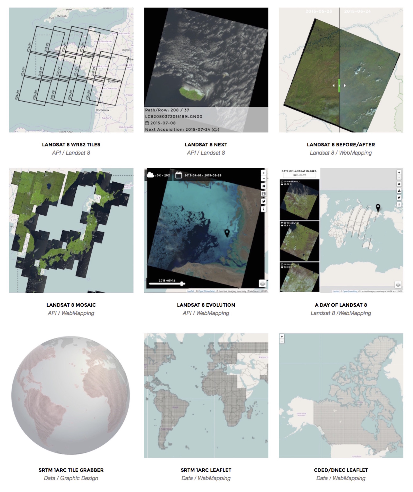

A Review
After the first 6 month in the RemotePixel adventure (and as I have no new project to present) it's a good time to do a quick review of the tools/services available through the WebMapping Page.
Elevation Data
Everything started with the SRTM data 1 arc. In late 2014 USGS announced the release of the SRTM 1arc data for FREE but it wasn't really clear how to acces the data. In the same time, I discovered the SRTM Tile Grabber, a great visualization tools by Derek Watkins to access the SRTM 3arc data. That was it, I had an idea: I'll do the exact same thing but with the SRTM 1arc data. After finding the data, I had to learn a bit of D3.js and I had my first project. But I wasn't happy with the result. As there are 9 times more tiles on the globe, the project is very slow and can result to a browser crash. So I created a simple map version of it (SRTM Leaflet). And as in Canada we often work with CDED elevation data instead of SRTM I did the same for those data. (CDED Leaflet).
The website really started with the project A Day Of Landsat8. With the release of Libra and Landsat-api by Developmentseed, my head was full of ideas. I loved the idea to ease access to landsat data throught simple tools. But first I had to find a new philosophy. As I said in the description, tools are generally based on localisation, and they are really usefull when you know what you are looking for. My thought were: Landsat image are beatifull everywhere, so let's find a way to visualize them without searching or filtering.
Today I use this tool to check landsat image every day and see if I can find something beatifull or interesting to show to my twitter followers. Speaking about my twitter folks, I'd like to thanks Rob Simmon (@rsimmon) for a nice shoutout :
Elegant browsing of recent satellite images http://t.co/MsvdVR6iCg by @RemotePixel cc @NASA_Landsat @USGSLandsat pic.twitter.com/L244j4tClR
— Rob Simmon (@rsimmon) June 10, 2015After this first one, I knew how to use the landsat-api, and how to acces three years of landsat scenes so it was pretty obvious to me that I was going to create a tool to see changes throught all landsat 8 archive. But as I found the task too 'simple', I decided to create a webservice that could enable every one to create an animated GIF with those images. With only a Raspberry Pi (2) to host the 'API' and the web site I had some problems at the beginning but now api.remotepixel.ca runs smoothly.
Thanks to Joshua Stevens (@jscarto) , HUB Remote Sensing (@HumboldtRemSens) and Open Data Zurich (@HumboldtRemSens) for their lovely comments!
Seriously cool! MT @RemotePixel: Introducing "Landsat 8 Evolution:" browse and use #landsat 8 open imagery catalogue http://t.co/RRb2G1BjMp
— Joshua Stevens (@jscarto) May 27, 2015#AnimatedGIF of your study area from #Landsat 8 #timeseries just a few clicks away! https://t.co/vIvj5VYdjm
— HUB Remote Sensing (@HumboldtRemSens) 19 Juin 2015Mindblowing! Create easily your own #Landsat8 timeseries on @remotepixel:
http://t.co/eU1BVdsuvc This is #Zurich ^sim pic.twitter.com/T8BdqUYpDt
— Open Data Zurich (@OpenDataZurich) 19 Juin 2015An other API related project with landsat look previews. The main idea was to be able to create landsat mosaic directly in web browser with the latest available scenes. As for Landsat 8 Evolution, you can share your mosaic on twitter or request a jpeg creation using api.remotepixel.ca
Eina online interactiva per fer mosaics d'imatges Landsat fàcilment http://t.co/87U0lFFO2a pic.twitter.com/BfctYnjGx9
— Geo Inquiets (@geoinquiets) June 24, 2015
In the same way of Landsat 8 Evolution, I wanted to build a tool to quickly show changes using landsat images. Creating a simple interface wasn't really easy (I know it's not really user friendly) but the most difficult part was to implement a responsive and map friendly before/after slider.
Special thanks to Karen Joyce (@KEJoyce2), your tweet made my day.
This week my #GIS class @jcu have asked to learn about #environmentalchange so we'll use the very cool http://t.co/DtEj33wiFe @RemotePixel
— Karen Joyce (@KEJoyce2) August 2, 2015
Landsat 8 WRS2 Tiles and Landsat 8 Next
Two projects that could be one. The principal objective of those projects was to built and equivalent to landsat-api but only for landsat WRS2 tiles. The result WRS2tiles API is based on Elastisearch, a really powerfull search server, and facilitate finding any wrs2 tile giving a point location, a path-row combination or a complex geometry location. With this information available I was able to built a simple project to get the date of the next Landsat 8 acquisition (and the weather forecast using openweathermap api) for an user defined location.
The past 5 month have been really exiting and I'm sure the next ones will be as well. I'd like to thanks all the people who help or encourage me and I hope you'll like the future projects.
- Date: August 2015
- Category: Random